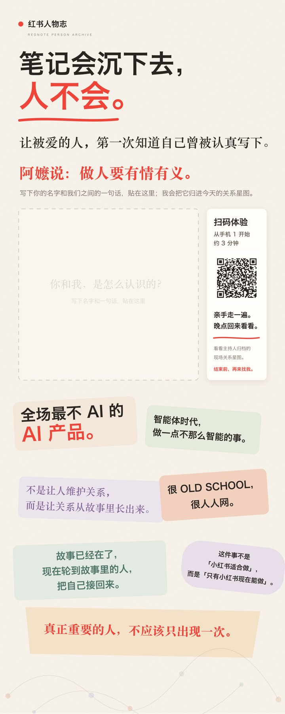
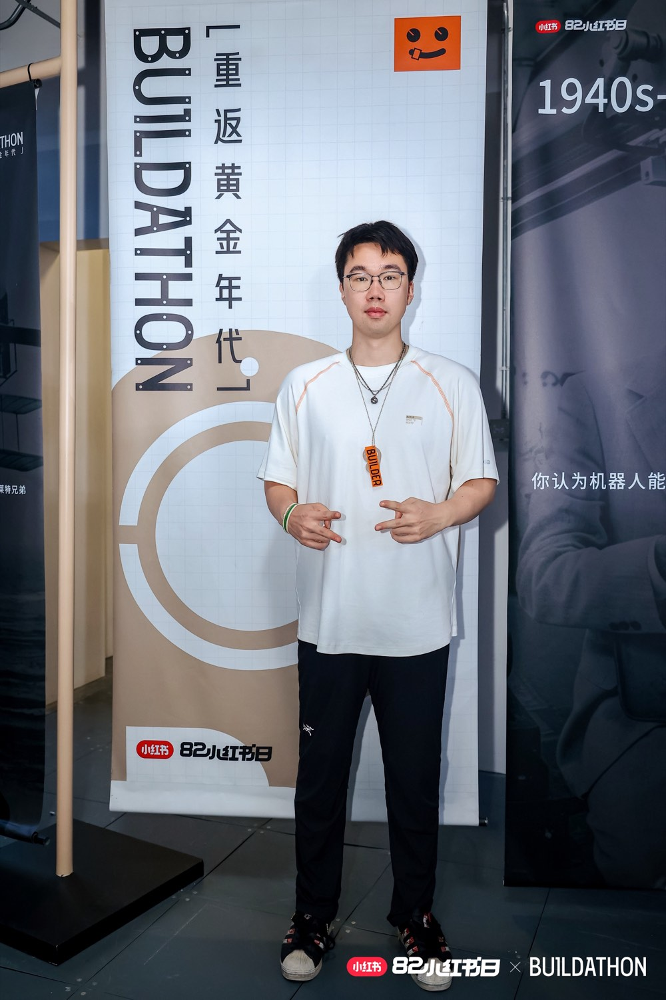
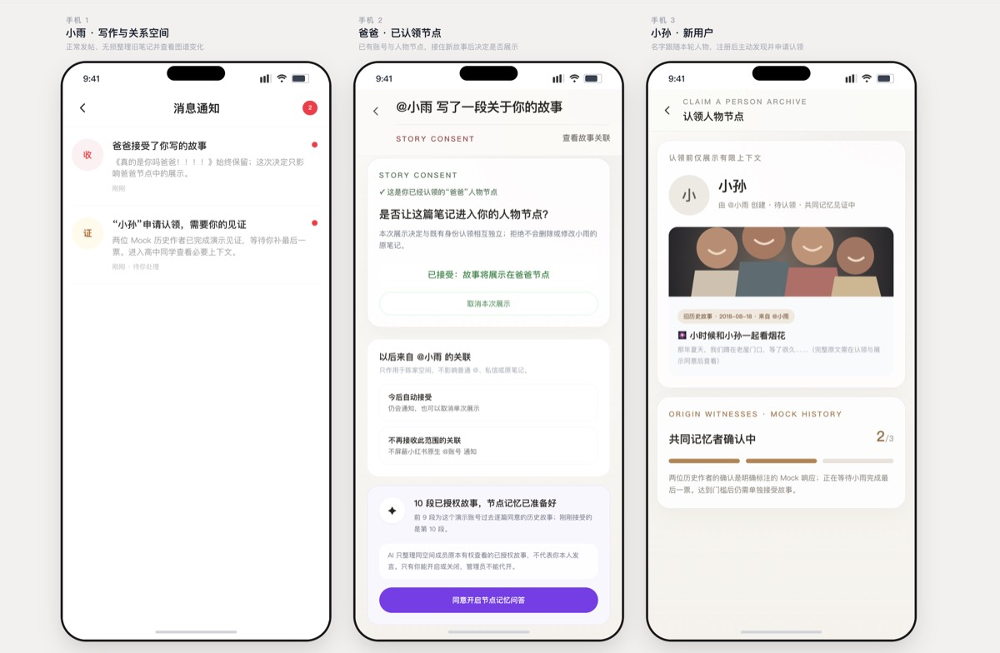
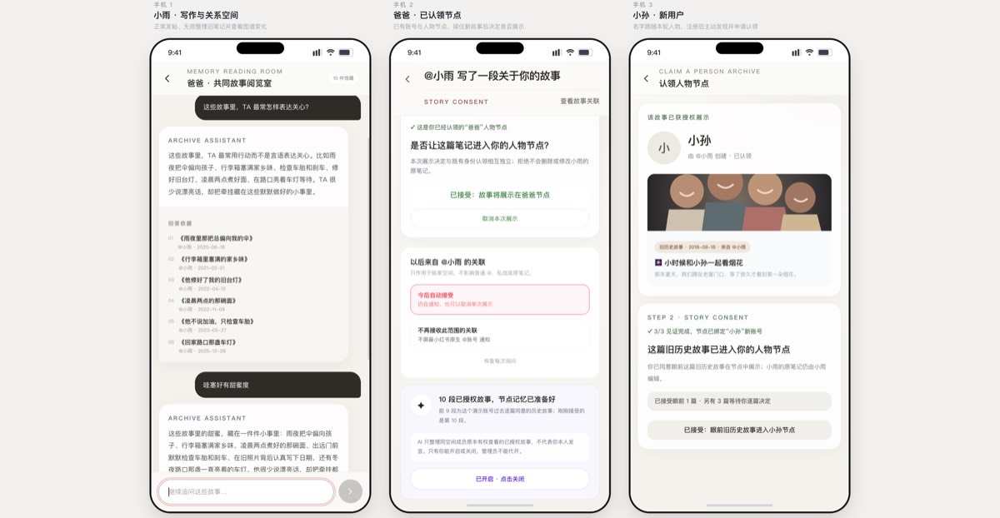

个人参赛 · 产品设计与全栈开发全部独立完成


易拉宝主视觉「你想把谁，写进来？」· 外滩老市府大楼 Demo Day 现场，独自参赛
小红书上早有大量写身边人的内容——「阿嬷的情书」、室友的故事、家庭回忆。但故事里被写到的那个人，没有一个结构化的归属入口。笔记会往下沉，人不该跟着一起沉。
一句话定义：用户继续像原来一样写笔记；AI 在原文之外提出可能涉及的现实人物，作者确认后，才把故事整理进关系空间。
差异化只有一句：不是先建关系网再往里填内容，而是从你已发布的真实笔记里，反向长出关系图谱。验证方法很硬——把 AI 撤掉，节点和关系边还在，还会随新故事增值。这是数据结构层的东西，不是一个 AI 玩具。
「你出现在了 @小雨 的一段重要回忆里。」被写到时收到的通知 · 全场情绪最高点
核心产品判断
AI 只提候选，确认前零副作用；作者的确认，是把「AI 的建议」转成「事实」的唯一开关。AI 抽出人物后不直接建图、不发通知——必须作者本人先确认「这篇写到了谁、映射哪个节点」。
为什么必须有这道门？因为「被写到」不等于「被定义」。没有它，AI 就能替用户决定「这篇写到了谁」并自动建档、发通知——这就从「我记录我和你的关系」滑向了「我借 AI 之手定义了你」。这是我给产品划的伦理红线。
确认前不建节点、不推送。否则 A 写室友 B 的私密回忆被自动挂到 B 名下、还推给了 B——直接击穿原笔记的可见范围。
AI 可能把一句修辞里的「隔壁老王」当真人。原始输出必须过服务端校验 + 作者确认，才能变成业务事实，杜绝幽灵节点。
一篇里两个「小明」是不是同一人？作者一眼就知道，AI 不知道。合并错了，关系图谱就错、通知也发给错的人。
一个机制，同时兜住三件本来要分开处理的事。我还留了「部分授权」的中间态——不是「同意 / 拒绝」二选一，而是「接受本次 / 拒绝本次 / 长期自动接受 / 不再接收」四层。原则写死进产品：自动接受省掉的是重复审核，不是知情权。

产品哲学 · User Journey
这条哲学是我所有细节判断的总开关，落在三处：① 发布不阻塞——新笔记先正常发出去，再弹一个可忽略的轻提示，AI 分析失败也不回滚发布；② 三端保持小红书原有的视觉与语言——被提及者收到的是「孩子写了关于你的故事」这种情感语言，不是冷冰冰的系统通知；③ 确认后才推——不是「AI 一识别到就推」，是「作者说『对，是这个人』之后才推」。
最大的一个「更炫但会打断习惯」的方案被我否掉了：「AI 装成人格跟你说话」。全场超 1/3 的人做这个方向，我刻意反着走——因为它同时打断两个习惯：破坏「笔记属于作者」的契约，也破坏信任（被写的人根本分不清那到底是不是本人的意思）。我把 AI 死死限定成「帮你读这个空间里已获授权的共同记忆」，而不是「替这个人活过一次」。
如何落地
前端 React + TypeScript，用一套状态机组织作者 / 被提及者 / 旁观者三种角色；后端 Python FastAPI 接大模型，完成人物抽取与节点记忆问答。一路迭代到 v1.0.48。
人物识别直接调用模型，作者确认、人物认领、故事展示三道门全部可交互；多账号通知与关系图用单浏览器状态组织，在 36 小时里把核心判断做成完整体验。赛后迁移到 Cloudflare，现在可以直接打开体验。

脱敏迁到 Cloudflare · 现在就能点开体验
▶ 在线体验产品 →